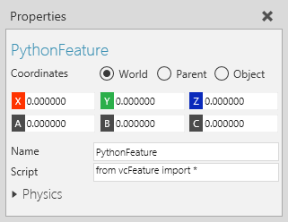

A Python Feature generates geometry and transforms child features using a script written in Python.

| Name | Description |
| Name | Defines the name of the feature. |
| Script | Defines the feature's Python script. When the feature is initially created, the script is initialized and is identical to a Transform feature with an empty expression.
The script must use the OnEvaluate event to generate geometry, apply transformations, and pass the feature and its subfeatures to its parent. |
| Physics | Defines a set of physics properties for the feature. |
| Name | Parameters | Description |
| OnEvaluate | vcFeature feature, vcGeometryContainer target, vcMatrix matrix, List of vcGeometryContainer containers | Triggered by the rebuilding of a component's feature tree.
feature is the Python feature object. target is the geometry container of the feature's parent. That is, any geometry passed to target will be rendered in the feature. matrix is the local transformation matrix of the feature. containers is a list of geometry containers subfeatures. When the feature itself is created a for loop is used to pass all geometry from subfeatures into the target. |
In order to access the script editor:
The script editor is the same one used for a Python Script.
The initial content of the editor contains a code snippet that defines the OnEvaluate event to function as a Transform feature with an empty expression:
| from vcFeature import * def OnEvaluate(feature, target, matrix, containers): for c in containers: c.moveGeometrySets(target,matrix) |
Example. Generate custom feature of mathematical shapes and visual tools

| from vcFeature import * import math, vcVector def OnEvaluate(feature, target, matrix, containers): '''Create custom line set in planes using 15 degree marks and axes''' target.clear() lineset = target.createGeometrySet(VC_COMPACTLINESET) lineset.LineWidth = 1 ##use unit circle to generate lines in xy,zx,yz planes max_radius = 300 for radius in range(100,(max_radius+100),100): line = [] for angle in range(0,375,1): radAngle = math.radians(angle) x = math.cos(radAngle)*radius y = math.sin(radAngle)*radius z = 0 point = vcVector.new(x,y,z) line.append(point) if len(line) == 2: lineset.addLine(line) for point in line: point.Z = point.X point.X = point.Y point.Y = 0 lineset.addLine(line) for point in line: point.Y = point.X point.X = 0 lineset.addLine(line) line[:] = [] angle += 15 ##generate lines for each axis based on max radius and offset for i in ['x','y','z']: p1,p2 = vcVector.new(),vcVector.new() if i == 'x': p1.X = max_radius+100 p2.X = -p1.X elif i == 'y': p1.Y = max_radius+100 p2.Y = -p1.Y elif i == 'z': p1.Z = max_radius+100 p2.Z = -p1.Z lineset.addLine([p1,p2]) for c in containers: c.moveGeometrySets(target,matrix) |